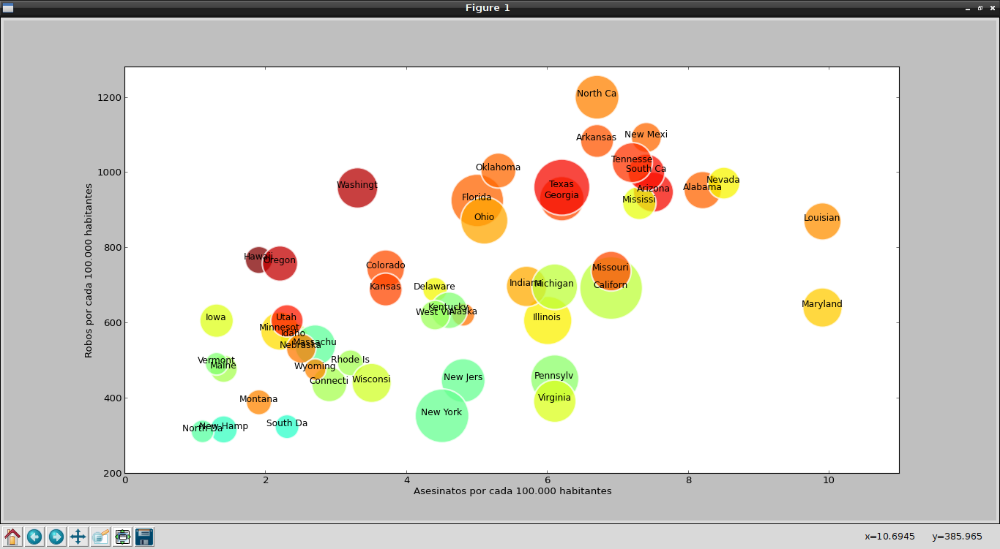

Creación de gráfico de burbujas con matplotlib
Posted on mié 20 febrero 2013 in Tutorial Python • 2 min read
Los gráficos de burbuja presentan los datos como una serie de burbujas, el tamaño de las cuales es proporcional a la cantidad de datos.
Un gráfico de este tipo resulta muy efectivo para mostrar el número de productos vendidos en cierta región.
Existe una herramienta que se llama Trendalyzer desarrollada por la Fundación Gapminder, está herramienta permite convertir series de estadísticas en gráficos interactivos.
Es Hans Rosling uno de los fundadores de Gapminder quien ha mostrado el potencial de la herramienta. El siguiente vídeo es una demostración de la herramienta:
Con matplotlib en Python también se pueden crear gráficas de burbuja, el artículo se basa en un artículo en Inglés llamado "How to make Bubble charts with matplotlib ".
Los datos se obtendrán de un archivo csv, estos datos son de estadística del crimen en los Estados Unidos por estado del año 2005. El archivo csv se puede bajar aquí.
La información en el archivo csv se tiene de la siguiente forma (se muestra las primeras líneas del archivo):
state,murder,forcible_rape,robbery,aggravated_assault,burglary,larceny_theft,motor_vehicle_theft,population
United States,5.6,31.7,140.7,291.1,726.7,2286.3,416.7,295753151
Alabama,8.2,34.3,141.4,247.8,953.8,2650,288.3,4545049
Alaska,4.8,81.1,80.9,465.1,622.5,2599.1,391,669488
Arizona,7.5,33.8,144.4,327.4,948.4,2965.2,924.4,5974834
Arkansas,6.7,42.9,91.1,386.8,1084.6,2711.2,262.1,2776221
California,6.9,26,176.1,317.3,693.3,1916.5,712.8,35795255
Como se ve la primera línea se tiene el título de cada columna, en la segunda línea se tiene la información total de Estados Unidos y luego se muestra la información por Estado.
Para efectos de programación la primera y segunda línea no son relevantes para la gráfica de burbuja.
A continuación el código del programa:
#!/usr/bin/env python
# -*- coding: utf-8 -*-
from pylab import *
from scipy import *
#Leer los datos desde el archivo csv
#Archivo original
#durl = 'http://datasets.flowingdata.com/crimeRatesByState2005.csv'
#Archivo modificado.
durl = 'http://127.0.0.1/descargas/crimeRatesByState2005-es.csv'
#Se captura los datos del archivo csv.
rdata = genfromtxt(durl,dtype='S8,f,f,f,f,f,f,f,i',delimiter=',')
rdata[0] = zeros(8) # se elimina los titulos
rdata[1] = zeros(8) # se elimina la estadistica total de estados unidos (2da linea)
x = []
y = []
color = []
area = []
#Se captura los datos de cada fila
for data in rdata:
x.append(data[1]) # asesinatos
y.append(data[5]) # robo
color.append(data[6]) # hurtos
area.append(sqrt(data[8])) # poblacion
# graficando las primeras 8 letras del nombre del estado
text(data[1], data[5],data[0],size=11,horizontalalignment='center')
# se crea la grafica
sct = scatter(x, y, c=color, s=area, linewidths=2, edgecolor='w')
sct.set_alpha(0.75)
#Se define los ejes
axis([0,11,200,1280])
#Las etiquetas de cada eje
xlabel('Asesinatos por cada 100.000 habitantes')
ylabel('Robos por cada 100.000 habitantes')
show()
La siguiente figura muestra el resultado de la ejecución del programa:

¡Haz tu donativo! Si te gustó el artículo puedes realizar un donativo con Bitcoin (BTC) usando la billetera digital de tu preferencia a la siguiente dirección: 17MtNybhdkA9GV3UNS6BTwPcuhjXoPrSzV
O Escaneando el código QR desde la billetera: